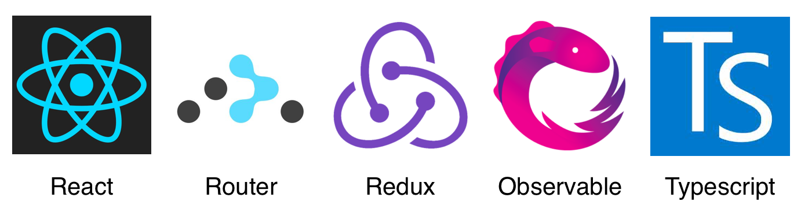
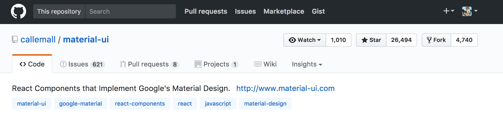
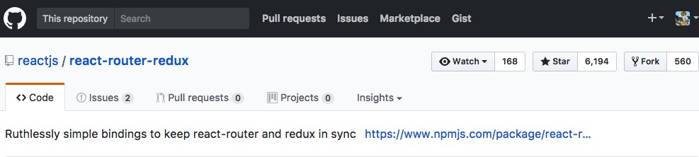
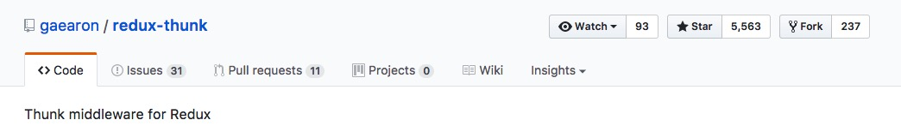
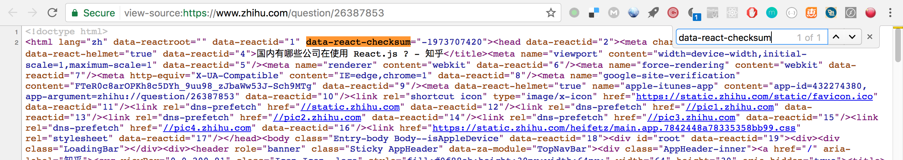

React Family Big Box
React 起源于 Facebook 的内部项目
因为对市场上所有 JavaScript MVC 框架都不满意，就决定自己写一套，用来架设 Instagram 的网站。
做出来以后，发现这套东西很好用，就在2013年5月开源了。
单页应用
组件化
代码重用性强
* 组件名称要大写
* JSX包含多行代码时，将它们包含在小括号中
* 只能存在一个顶级标签
React-router是官方维护的项目、
你只要用了 React，就会发现合理的选择就是，采用它的整个技术栈。——阮一峰
降低大型应用的复杂性
组件的切换
Url管理
React 只是 DOM 的一个抽象层，并不是 Web 应用的完整解决方案。有两个方面，它没涉及。
- 代码结构
- 组件通信
2014年facebook推出flux、来解决相关问题、2015年redux出现，将 Flux 与函数式编程结合一起，很短时间内就成为了最热门的前端架构。对react的应用、作者还推出了react-redux

数据共享
其实如果你的应用不是很大型、那就不需要redux、使用它反而会给你的应用增加复杂度
通过创建epics中间件，为每一个dispatch添加相应的附加效果,基于rxjs实现
例子关联的东西略复杂
函数的lodash
TypeScript是JavaScript类型的超集、可以编译成JavaScript
对于react组件参数类型的校验、Facebook出了这样一个插件来规范传入类型
更能预见错误
使用ts-lint进行语法检查和报错
更多😯
还有一些生态圈中比较好用的相关库我还没开始看、接下来就开始列举
material-ui
react-router-redux
redux-thunk
哪些知名项目在用？😄
lantern 蓝灯
AntDesign网站
美团、阿里、去哪、等公司的内部系统用的居多
知乎的文章页使用react做服务端渲染
